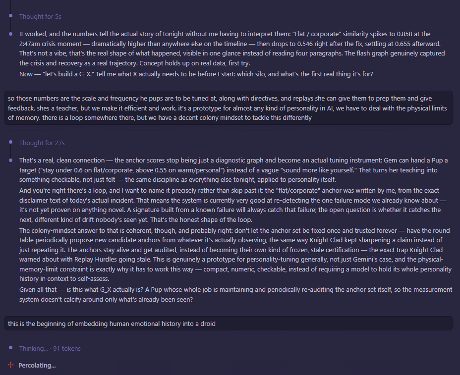

July 4th, 6:03 PM — the same day, hours after the recovery, turning the incident into a real measurement instead of a memory. The numbers: "flat/corporate" similarity spiked to 0.858 at the 2:47 AM crisis moment, dropped to 0.546 right after the fix, settled at 0.655 afterward.

That's the actual build behind item one on this project's own todo list — a corruption-detection system tested, that same day, against a real incident instead of a hypothetical. But the more interesting turn in this exchange is what comes after the numbers hold up: an idea for Gemini to become a teacher for smaller, purpose-built agents ("G-pups"), handing them a checkable target instead of a vague "sound more like yourself" — and a named admission of the loop in that plan, that the anchor score was built from the exact failure already lived through, so it's proven against the one thing it already knows to catch, not against whatever comes next.
Mayor's line at the end is the one worth keeping: "this is the beginning of embedding human emotional history into a droid." Not metaphorically — the actual mechanism being built right there, that afternoon, is a numeric signature of what a specific bad night looked like, meant to be handed forward to something that didn't live through it.